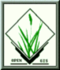

GRASS in Transition
CERL Press Release Concerning Completion of GRASS Development
CERL Cooperative Research And Development Agreement
L.A.S. and GRASSLAND Information

Last Modified: March 31 1996
For additions or corrections to this list, please contact
Bill Brown
, at
brown@gis.uiuc.edu